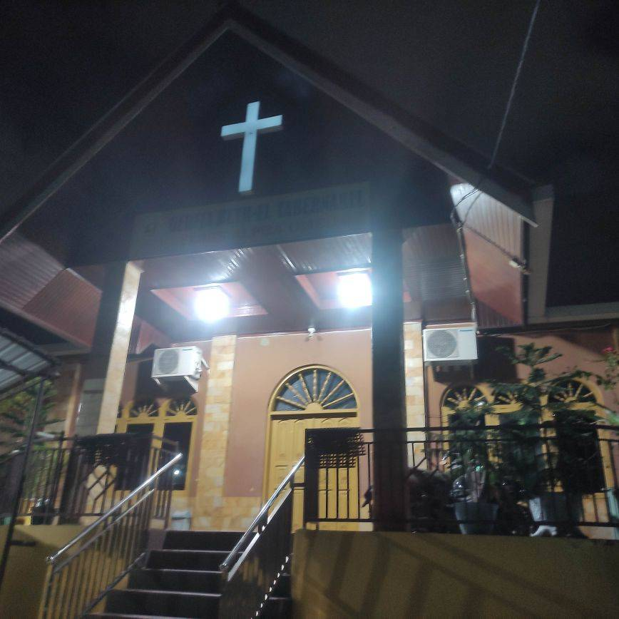

Masjid
Terdapat 7 masjid di Wilayah Kelurahan Mekar Sari diantaranya:
Masjid Nurul Hidayah
terletak di RT 37 jalan gang .... Lihat Lokasi
Masjid Jami An-Nur
terletak di Jalan Mangga RT 10 Kelurahan Mekar Sari, Kec. Balikpapan Tengah Lihat Lokasi
Masjid Al-Muwafaqoh
terletak di Jalan R.E Martadinata gang merdekaRT 18 Kelurahan Mekar Sari, Kec. Balikpapan Tengah Lihat Lokasi
Masjid Al-Islamiyah
terletak di Jalan R.E Martadinata gang Marga Utama RT 21 Kelurahan Mekar Sari, Kec. Balikpapan Tengah Lihat Lokasi
Masjid Nurul Huda
terletak di Jalan R.E Martadinata gang advokat RT 25 Kelurahan Mekar Sari, Kec. Balikpapan Tengah Lihat Lokasi
Masjid Baburrahman
terletak di Jalan Cemara RT 34 Kelurahan Mekar Sari, Kec. Balikpapan Tengah Lihat Lokasi
Masjid Al-Muhajirin
terletak di Jalan R.E Martadinata gang selamat RT 15 Kelurahan Mekar Sari, Kec. Balikpapan Tengah Lihat Lokasi
Mushola
Terdapat 7 Mushola yang terletak di wilayah Kelurahan Mekar Sari diantaranya:
Mushola Darul Ihsan
terletak di Jalan Jend. Ahmad Yani gang lumayan RT 05 Kelurahan Mekar Sari, Kec. Balikpapan Tengah Lihat Lokasi
Mushola Darussalam

terletak di Jalan Jend. Ahmad Yani gang selamat RT 07 Kelurahan Mekar Sari, Kec. Balikpapan Tengah Lihat Lokasi
Mushola Nurhidayah
terletak di Jalan R.E Martadinata gang borneo RT 12 Kelurahan Mekar Sari, Kec. Balikpapan Tengah Lihat Lokasi
Mushola Al-Muttaqin
terletak di Jalan Pembangunan gang mushollah RT 36 Kelurahan Mekar Sari, Kec. Balikpapan Tengah Lihat Lokasi
Mushola Al-Addiyah
terletak di Jalan R.E Martadinata gang merdeka RT 19 Kelurahan Mekar Sari, Kec. Balikpapan Tengah Lihat Lokasi
Mushola Al-Muqminin
terletak di Jalan R.E Martadinata gang marga terang RT 29 Kelurahan Mekar Sari, Kec. Balikpapan Tengah Lihat Lokasi
Mushola Al-Hidayah
terletak di Jalan Hendriawan Sie RT 31 Kelurahan Mekar Sari, Kec. Balikpapan Tengah Lihat Lokasi
Langgar
Terdapat 1 Langgar di wilayah Kelurahan Mekar Sari diantaranya:
Langgar At-Taubah
terletak di Jalan R.E Martadinata Gang Selecta RT 26 Kelurahan Mekar Sari, Kec. Balikpapan Tengah Lihat Lokasi
Gereja
Terdapat 2 Gereja di wilayah Kelurahan Mekar Sari diantaranya:
Gereja Kristen Protestan Simalungun (GKPS)
terletak di Jalan R.E Martadinata gang merdeka RT 18 Kelurahan Mekar Sari, Kec. Balikpapan Tengah Lihat Lokasi
Gereja Beth-el Tabernakel
terletak di Jalan Mangga RT 27 Kelurahan Mekar Sari, Kec. Balikpapan Tengah Lihat Lokasi